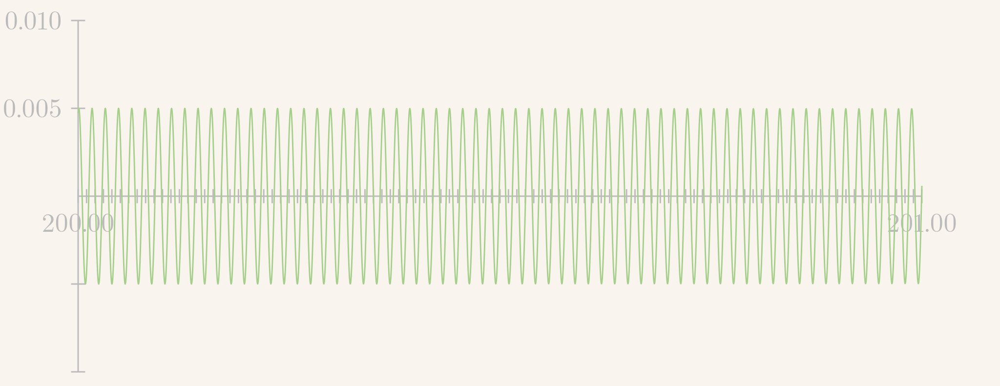
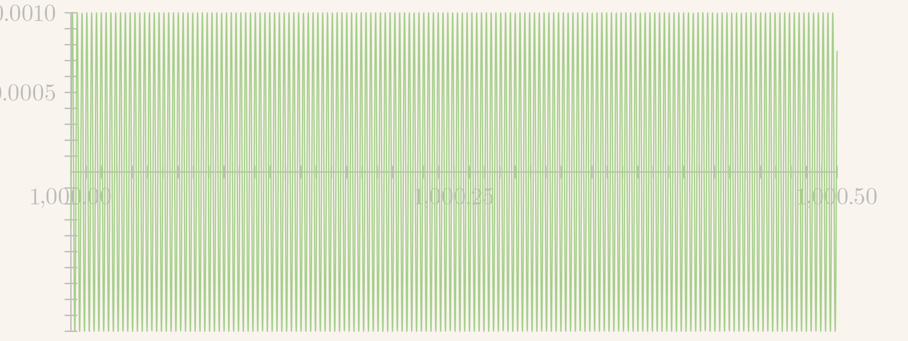
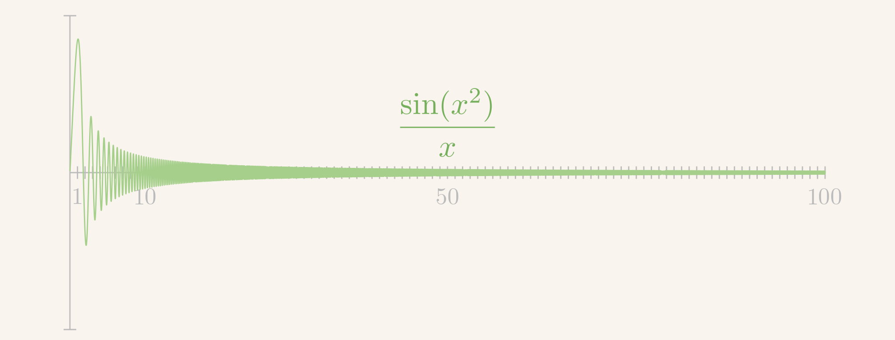

\gdef\red#1{{\color{cb8680}{#1}}} \gdef\green#1{{\color{4f8d63}{#1}}} \gdef\gray#1{{\color{gray}{#1}}} \gdef\purple#1{{\color{B189C6}{#1}}} \gdef\orange#1{{\color{dfa04b}{#1}}} \gdef\white#1{{\color{white}{#1}}}
一定区间上的全体函数形成函数空间
粗略的说法；没有明确边界条件、微分性质
许多情况下，是个线性空间
空间中的一个矢量代表一个函数
无穷维线性空间
求解偏微分、常微分方程：在空间里面寻找满足条件的矢量
如何刻画函数空间？
必备条件：线性独立性，完备性
空间内的任意矢量都可以用该基底展开，且展开表达式唯一
泰勒展开：提供 单项式作为基底 x0,x1,x2,⋯x^0, x^1, x^2, \cdotsx0,x1,x2,⋯
f(x)=∑n=0+∞f(n)(0)n!xnf(x) = \sum_{n = 0}^{+\infty} \frac{f^{(n)}(0)}{n!} \green{\boldsymbol{x^n}} f(x)=n=0∑+∞n!f(n)(0)xn
无穷多个基底矢量：无穷维空间
实光滑函数的展开可能 不收敛为原来函数
[0,ℓ][0, \ell][0,ℓ] 有 {sinnπℓx}\{\sin \frac{n \pi }{\ell} x\}{sinℓnπx}、{cosnπℓx}\{\cos \frac{n \pi}{\ell} x\}{cosℓnπx}，{sin(n+1/2)πℓx}\{\sin \frac{(n + 1/2)\pi}{\ell} x\}{sinℓ(n+1/2)πx}, ⋯\cdots⋯
[0,2π][0, 2\pi][0,2π] 或者 [−π,π][-\pi, \pi][−π,π] 有 {sinnx,cosnx}\{\sin nx, \cos nx\}{sinnx,cosnx} 或者 {eimx,m∈Z}\{e^{imx}, m \in \mathbb{Z}\}{eimx,m∈Z}
sin\sinsin 负责奇函数，cos\coscos 负责偶函数
[−ℓ,ℓ][-\ell, \ell][−ℓ,ℓ] 有 {eimπx/ℓ,m∈Z}\{e^{i m \pi x/\ell}, m \in \mathbb{Z}\}{eimπx/ℓ,m∈Z}
例子：实线性空间 Rn\mathbb{R}^nRn 中的内积，
(v,w)=∑i=1nviwi=v1w1+...+vnwn∈R .(v, w) = \sum_{i=1}^{n} v_i w_i = v_1 w_1 + ... + v_n w_n \in \mathbb{R} \ . (v,w)=i=1∑nviwi=v1w1+...+vnwn∈R .
也称为 点乘 (dot product)，标量积 (scalar product) 也可以记为 ⟨v,w⟩,⟨v∣w⟩,...\langle v, w\rangle, \quad \langle v|w\rangle, \quad ...⟨v,w⟩,⟨v∣w⟩,...
例子：复线性空间 Cn\mathbb{C}^nCn 中的内积，
(v,w)=∑i=1nvi‾wi=v1‾w1+...+vn‾wn .(v, w) = \sum_{i=1}^{n} \overline{v_i} w_i = \overline{v_1} w_1 + ... + \overline{v_n} w_n \ . (v,w)=i=1∑nviwi=v1w1+...+vnwn .
模方 ∣v∣2=(v,v)∈R|v|^2 = (v, v) \in \mathbb{R}∣v∣2=(v,v)∈R
(ei,ej)={0i≠jℓi>0i=j ,ℓi=1\red{(e_i, e_j) = \left\{ \begin{array}{cc} 0 & i \ne j \\ \ell_i > 0 & i = j \end{array}\right.} \ , \qquad \green{\ell_i = 1} (ei,ej)={0ℓi>0i=ji=j ,ℓi=1
(f,g)≔∫−ℓℓf(x)‾g(x)dx .{\color{green}(f, g)} \coloneqq \int_{-\ell}^\ell \overline{f(x)}g(x) dx \ . (f,g):=∫−ℓℓf(x)g(x)dx .
Joseph Fourier (1768-1830)
f(x)=∑n=−∞+∞fneinπx/ℓ .f(x) = \sum_{n = - \infty}^{+\infty} \green{f_n} e^{i n \pi x/\ell} \ . f(x)=n=−∞∑+∞fneinπx/ℓ .
fn=12ℓ∫−ℓ+ℓf(ξ)e−inπξ/ℓdξ ,∀n∈Z .\green{f_n} = \green{\frac{1}{2\ell} \int_{-\ell}^{+\ell} f(\xi) e^{- i n \pi \xi/\ell}d\xi} \ , \qquad \forall n \in \mathbb{Z} \ . fn=2ℓ1∫−ℓ+ℓf(ξ)e−inπξ/ℓdξ ,∀n∈Z .
周期函数
[−ℓ,ℓ][-\ell, \ell][−ℓ,ℓ] 上的连续函数可以延拓为 R\mathbb{R}R 上的周期函数，同样可以用 {eimπx/ℓ}\{e^{i m \pi x/\ell}\}{eimπx/ℓ} 可以对他们进行展开，展开系数跟 [−ℓ,ℓ][-\ell, \ell][−ℓ,ℓ] 的结果一样
(eimπx/ℓ,einπx/ℓ)=0,m≠n .(e^{im \pi x/\ell}, e^{in \pi x/\ell}) = 0, \qquad m \ne n \ . (eimπx/ℓ,einπx/ℓ)=0,m=n .
(eimπx/ℓ,eimπx/ℓ)=2ℓ<∞ ,⇒ (12ℓeimπx/ℓ,12ℓeimπx/ℓ)=1 .\begin{align*} & \ (e^{im \pi x/\ell}, e^{im \pi x/\ell}) = 2 \ell < \infty \ , \\ \Rightarrow & \ \bigg(\frac{1}{\sqrt{2\ell}} e^{i m \pi x/\ell}, \frac{1}{\sqrt{2\ell}} e^{i m \pi x/\ell} \bigg) = 1 \ . \end{align*} ⇒ (eimπx/ℓ,eimπx/ℓ)=2ℓ<∞ , (2ℓ1eimπx/ℓ,2ℓ1eimπx/ℓ)=1 .
直接验证正交性，考虑 m≠nm \ne nm=n，
(einπx/ℓ,eimπx/ℓ)=∫−ℓ+ℓei(m−n)πx/ℓdx=ℓiπei(m−n)πx/ℓm−n∣−ℓ+ℓ=0(e^{i n \pi x/\ell}, e^{i m \pi x/\ell}) = \int_{-\ell}^{+\ell} e^{i (m - n) \pi x/\ell} dx = \frac{\ell}{i\pi} \frac{e^{i (m - n) \pi x/\ell}}{m - n}\bigg|_{-\ell}^{+\ell} = 0 (einπx/ℓ,eimπx/ℓ)=∫−ℓ+ℓei(m−n)πx/ℓdx=iπℓm−nei(m−n)πx/ℓ−ℓ+ℓ=0
直接验证可归一化，考虑 m=nm = nm=n，
(einπx/ℓ,einπx/ℓ)=∫−ℓ+ℓdx=2ℓ (e^{i n \pi x/\ell}, e^{i n \pi x/\ell}) = \int_{-\ell}^{+\ell} dx = 2\ell (einπx/ℓ,einπx/ℓ)=∫−ℓ+ℓdx=2ℓ
当 ℓ→+∞\ell \to +\inftyℓ→+∞，1/2ℓ→01/2\ell \to 01/2ℓ→0，
f(x)= ∑n=−∞+∞12ℓ[∫−ℓ+ℓf(ξ)e−inπξ/ℓdξ]e+inπx/ℓ∼ ∑n=−∞+∞无穷小量×[...](n)e+inπx/ℓ\begin{align*} f(x) = & \ \sum_{n = -\infty}^{+\infty} \orange{\frac{1}{2\ell}} \green{\bigg[\int_{-\ell}^{+\ell}f(\xi)e^{- i n \pi \xi/\ell}d\xi \bigg]} e^{+i n \pi x/\ell} \\ \sim & \ \sum_{n = -\infty}^{+\infty} \orange{\text{无穷小量}} \times \green{\big[... \big](n)} e^{+ i \purple{n \pi} x/\purple{\ell}} \end{align*} f(x)=∼ n=−∞∑+∞2ℓ1[∫−ℓ+ℓf(ξ)e−inπξ/ℓdξ]e+inπx/ℓ n=−∞∑+∞无穷小量×[...](n)e+inπx/ℓ
形成 黎曼积分 的结构
kn≔nπℓ,Δkn=kn+1−kn=πℓ,12ℓ=Δkn2π\purple{k_n \coloneqq \frac{n \pi }{\ell}}, \quad \Delta k_n = k_{n + 1} - k_n = \frac{\pi}{\ell} , \quad \orange{\frac{1}{2\ell} = \frac{\Delta k_n}{2\pi}} kn:=ℓnπ,Δkn=kn+1−kn=ℓπ,2ℓ1=2πΔkn
f(x)= ∑n=−∞+∞12ℓ[∫−ℓ+ℓf(ξ)e−inπξ/ℓdξ]e+inπx/ℓ= ∑n=−∞+∞Δkn2π[...](kn)e+iknx\begin{align*} f(x) = & \ \sum_{n = -\infty}^{+\infty} \orange{\frac{1}{2\ell}} \green{\bigg[\int_{-\ell}^{+\ell}f(\xi)e^{- i n \pi \xi/\ell}d\xi \bigg]} e^{+i \purple{n \pi} x/\purple{\ell}} \\ = & \ \sum_{n = -\infty}^{+\infty} \orange{\frac{\Delta k_n}{2\pi}} \green{\big[...\big](k_n)} e^{+i \purple{k_n} x} \end{align*} f(x)== n=−∞∑+∞2ℓ1[∫−ℓ+ℓf(ξ)e−inπξ/ℓdξ]e+inπx/ℓ n=−∞∑+∞2πΔkn[...](kn)e+iknx
f(x)=12π∫−∞+∞dkF(k)e+ikxf(x) = \red{\frac{1}{\sqrt{2\pi}}} \int_{-\infty}^{+\infty} dk F(k) e^{+i k x} f(x)=2π1∫−∞+∞dkF(k)e+ikx
F(k)=12π∫−∞+∞f(ξ)e−ikξdξF(k) = \frac{1}{\sqrt{2\pi}} \int_{-\infty}^{+\infty} f(\xi) e^{- i k \xi} d\xi F(k)=2π1∫−∞+∞f(ξ)e−ikξdξ
f(x)=∫−∞+∞dk2πF(k)e+ikxf(x) = \int_{-\infty}^{+\infty}\frac{dk}{\sqrt{2\pi}} F(k) e^{+i k x} f(x)=∫−∞+∞2πdkF(k)e+ikx
F(k)≔12π∫−∞+∞f(x)e−ikxdx .\green{F(k) \coloneqq \frac{1}{\sqrt{2\pi}} \int_{-\infty}^{+\infty}f(x)e^{- i k x}dx} \ . F(k):=2π1∫−∞+∞f(x)e−ikxdx .
f(x)=12π∫−∞+∞F(k)eikxdkf(x) = \frac{1}{\sqrt{2\pi}} \int_{-\infty}^{+\infty} F(k) e^{i k x}dk f(x)=2π1∫−∞+∞F(k)eikxdk
f(x)↔F(k) f(x) \leftrightarrow F(k) f(x)↔F(k)
F=F[f],f=F−1[F] F = \mathscr{F}[f], \quad f = \mathscr{F}^{-1}[F] F=F[f],f=F−1[F]
F(k)=F(f(x)),f(x)=F−1[F(k)] F(k) = \mathscr{F}(f(x)), \qquad f(x) = \mathscr{F}^{-1}[F(k)] F(k)=F(f(x)),f(x)=F−1[F(k)]
新正交归一基底 {en′}\{e'_n\}{en′}：v=∑nvn′en′v = \sum_{n} v'_n e'_nv=∑nvn′en′
em=∑mAmnen′,Amn=(en′,em)=en′⋅em e_m = \sum_{m} A_{mn} e'_n, \qquad A_{mn} = (e'_n, e_m) = e'_n \cdot e_m em=m∑Amnen′,Amn=(en′,em)=en′⋅em
矢量 vvv 的重新分解
v= ∑mvmem=∑mvm∑n(en′,em)en′= ∑n[∑mvm(en′,em)]en′=∑nvn′en′\begin{align*} v = & \ \sum_{m} v_m \orange{e_m} = \sum_{m} v_m \orange{\sum_{n} (e'_n, e_m) e'_n}\\ = & \ \sum_{n} \green{\left[{\sum_{m}v_m (e'_n, e_m)}\right]} e'_n = \sum_{n} \green{v'_n} e'_n \end{align*} v== m∑vmem=m∑vmn∑(en′,em)en′ n∑[m∑vm(en′,em)]en′=n∑vn′en′
波函数 ψ(x)\psi(x)ψ(x)：坐标基底 ∣x⟩|x\rangle∣x⟩ 下的分量
∣ψ⟩=∫−∞+∞dxψ(x)∣x⟩ |\psi\rangle = \int_{-\infty}^{+\infty} dx \psi(x) |x\rangle ∣ψ⟩=∫−∞+∞dxψ(x)∣x⟩
动量基底 ∣k⟩|k\rangle∣k⟩，
⟨k∣x⟩=e−ikx\langle k |x \rangle = e^{-i k x} ⟨k∣x⟩=e−ikx
动量基底下重新展开
∣ψ⟩= ∫−∞+∞dx(∫−∞+∞dk∣k⟩⟨k∣)ψ(x)∣x⟩= ∫−∞+∞dk[∫−∞+∞dxψ(x)⟨k∣x⟩]∣k⟩= ∫−∞+∞dkΨ(k)∣k⟩\begin{align*} |\psi\rangle = & \ \int_{-\infty}^{+\infty} dx \left({\int_{-\infty}^{+\infty} dk |k\rangle \langle k|}\right) \psi(x) | x\rangle\\ = & \ \int_{-\infty}^{+\infty}dk \green{\left[{\int_{-\infty}^{+\infty}dx \psi(x) \langle k|x\rangle}\right]} |k\rangle\\ = & \ \int_{-\infty}^{+\infty} dk \green{\Psi(k)} |k\rangle \end{align*} ∣ψ⟩=== ∫−∞+∞dx(∫−∞+∞dk∣k⟩⟨k∣)ψ(x)∣x⟩ ∫−∞+∞dk[∫−∞+∞dxψ(x)⟨k∣x⟩]∣k⟩ ∫−∞+∞dkΨ(k)∣k⟩
动量基底下的展开系数 (波函数)
Ψ(k)=∫−∞+∞dxψ(x)⟨k∣x⟩=∫−∞+∞dxψ(x)e−ikx\Psi(k) = \int_{-\infty}^{+\infty} dx \psi(x) \langle k|x\rangle = \int_{-\infty}^{+\infty} dx \psi(x) e^{- i k x} Ψ(k)=∫−∞+∞dxψ(x)⟨k∣x⟩=∫−∞+∞dxψ(x)e−ikx
二维傅里叶变换
F(k,ℓ)≔ 12π∫−∞+∞f(x,y)e−i(kx+ℓy)dxdyf(x,y)≔ 12π∫−∞+∞F(k,ℓ)ei(kx+ℓy)dkdℓ\begin{align*} F(k, \ell) \coloneqq & \ \frac{1}{2\pi} \int_{-\infty}^{+\infty}f(x, y) e^{-i (kx + \ell y)} dx dy\\ f(x, y) \coloneqq & \ \frac{1}{2\pi}\int_{-\infty}^{+\infty} F(k, \ell) e^{i (k x + \ell y)}dk d\ell \end{align*} F(k,ℓ):=f(x,y):= 2π1∫−∞+∞f(x,y)e−i(kx+ℓy)dxdy 2π1∫−∞+∞F(k,ℓ)ei(kx+ℓy)dkdℓ
多元函数可以选择对其中一个或若干个变量做傅里叶变换。其中 2π=(2π)22\pi = (\sqrt{2\pi})^22π=(2π)2
F~(k,y)=12π∫−∞+∞f(x,y)e−ikxdx\tilde F(k, y) = \frac{1}{\sqrt{2\pi}}\int_{-\infty}^{+\infty} f(x, y) e^{-i k x} dx F~(k,y)=2π1∫−∞+∞f(x,y)e−ikxdx
F(k,ℓ)=12π∫−∞+∞F~(k,y)e−iℓydyF(k, \ell) = \frac{1}{\sqrt{2\pi}}\int_{-\infty}^{+\infty} \tilde F(k, y) e^{-i \ell y} dy F(k,ℓ)=2π1∫−∞+∞F~(k,y)e−iℓydy
常用积分公式
∫−∞+∞f(x)dx=∫−∞+∞f(−x)dx \int_{-\infty}^{+\infty} f(x) dx = \int_{-\infty}^{+\infty} f(-x) dx ∫−∞+∞f(x)dx=∫−∞+∞f(−x)dx
∫−∞+∞f(x+a)dx=∫−∞+∞f(x′)d(x′−a)=∫−∞+∞f(x)dx \int_{-\infty}^{+\infty} f(x+a) dx = \int_{-\infty}^{+\infty} f(x') d(x'-a) = \int_{-\infty}^{+\infty} f(x) dx ∫−∞+∞f(x+a)dx=∫−∞+∞f(x′)d(x′−a)=∫−∞+∞f(x)dx
“厄米性”：当 f(x)f(x)f(x) 是实函数，则
F(−k)=F(k)‾F(-k) = \overline{F(k)} F(−k)=F(k)
直接计算，利用 f(x)‾=f(x)\overline{f(x)} = f(x)f(x)=f(x)，
F(k)‾=12π∫−∞+∞f(x)e+ikxdx=F(−k)\overline{F(k)} = \frac{1}{\sqrt{2\pi}}\int_{-\infty}^{+\infty} f(x) e^{+ i k x} dx = F(-k) F(k)=2π1∫−∞+∞f(x)e+ikxdx=F(−k)
当 f(x)f(x)f(x) 是偶函数，则 F(k)F(k)F(k) 也是偶函数
直接计算，
F(−k)= ∫−∞+∞f(x)e+ikxdx2π=∫−∞+∞f(−x)e−ikxdx2π=∫−∞+∞f(x)e−ikxdx2π= F(k)\begin{align*} F(-k) = & \ \int_{-\infty}^{+\infty} f(x) e^{+ i k x} \frac{dx}{\sqrt{2\pi}} \\ = & \int_{-\infty}^{+\infty} f(-x) e^{- i k x} \frac{dx}{\sqrt{2\pi}} = \int_{-\infty}^{+\infty} f(x) e^{- i k x} \frac{dx}{\sqrt{2\pi}} \\ = & \ F(k) \end{align*} F(−k)=== ∫−∞+∞f(x)e+ikx2πdx∫−∞+∞f(−x)e−ikx2πdx=∫−∞+∞f(x)e−ikx2πdx F(k)
实偶性：当 f(x)f(x)f(x) 是实偶函数，则 F(k)F(k)F(k) 也是实偶函数
F(k)‾= 12π∫−∞+∞f(x)e+ikxdx= 12π∫−∞+∞f(−x)e−ikxdx= 12π∫−∞+∞f(x)e−ikxdx=F(k)\begin{align*} \overline{F(k)} = & \ \frac{1}{\sqrt{2\pi}}\int_{-\infty}^{+\infty} f(x) e^{+ i k x} dx \\ = & \ \frac{1}{\sqrt{2\pi}} \int_{-\infty}^{+\infty} f(-x) e^{- i k x} dx\\ = & \ \frac{1}{\sqrt{2\pi}} \int_{-\infty}^{+\infty} f(x) e^{- i k x} dx = F(k) \end{align*} F(k)=== 2π1∫−∞+∞f(x)e+ikxdx 2π1∫−∞+∞f(−x)e−ikxdx 2π1∫−∞+∞f(x)e−ikxdx=F(k)
线性性, λ,λ1,λ2∈R\lambda, \lambda_1, \lambda_2 \in \mathbb{R}λ,λ1,λ2∈R
F[λf]= λF[f],F[λ1f1+λ2f2]= λ1F[f1]+λ2F[f2]\begin{align*} \mathscr{F}[\lambda f] = & \ \lambda \mathscr{F}[f],\\ \mathscr{F}[\lambda_1 f_1 + \lambda_2 f_2] = & \ \lambda_1 \mathscr{F}[f_1] + \lambda_2 \mathscr{F}[f_2] \end{align*} F[λf]=F[λ1f1+λ2f2]= λF[f], λ1F[f1]+λ2F[f2]
证明：显然
微分定理：如果 f(±∞)=0f(\pm \infty) = 0f(±∞)=0
f′(x)↔(ik)F(k)f'(x) \leftrightarrow (ik) F(k) f′(x)↔(ik)F(k)
用于把函数导数变成乘积，把微分方程变成代数方程
微分定理证明：分部积分，
2πF[f′](k)=∫−∞+∞f′(x)e−ikxdx= f(x)e−ikx∣−∞+∞−∫−∞+∞f(x)(−ik)e−ikxdx= 0+2πikF(k)\begin{align*} & \ \sqrt{2\pi}\mathscr{F}[f'](k) = \int_{-\infty}^{+\infty}f'(x)e^{-ikx}dx \\ = & \ f(x)e^{- i k x}\bigg|_{-\infty}^{+\infty} \red{-} \int_{-\infty}^{+\infty}f(x)(\red{-}ik)e^{-ikx}dx \\ = & \ 0 + \sqrt{2\pi} ik F(k) \end{align*} == 2πF[f′](k)=∫−∞+∞f′(x)e−ikxdx f(x)e−ikx−∞+∞−∫−∞+∞f(x)(−ik)e−ikxdx 0+2πikF(k)
微分定理推论：如果 f(k=0,1,…n−1)(±∞)=0f^{(k = 0, 1, \dots n-1)}(\pm \infty) = 0f(k=0,1,…n−1)(±∞)=0，则
f(n)(x)↔(ik)nF(k)f^{(n)}(x) \leftrightarrow (ik)^n F(k) f(n)(x)↔(ik)nF(k)
导数条件 f(k)=0f^{(k)} = 0f(k)=0 均需单独列出：无穷远处函数趋零 不代表 彻底躺平
f(±∞)=0⇏f(1)(±∞)=0 f(\pm \infty) = 0 \quad \red{\not \Rightarrow} \quad f^{(1)}(\pm \infty) = 0 f(±∞)=0⇒f(1)(±∞)=0
函数可以在归零的同时，以 越来越高 的频率震荡
 sin(x2)/x\sin(x^2)/xsin(x2)/x 在 (200,201)(200, 201)(200,201) 之间的图像

sin(x2)/x\sin(x^2)/xsin(x2)/x 在 (1000,1000.5)(1000, 1000.5)(1000,1000.5) 之间的图像

Do not go gentle into that good night. Old age should burn and rave at close of day. Rage, rage against the dying of the light.
——Dylan Thomas
积分定理：如果 ∫−∞+∞f(x)dx=0\int_{-\infty}^{+\infty}f(x) dx = 0∫−∞+∞f(x)dx=0，则
f(x)↔F(k)⇒∫−∞xf(ξ)dξ↔1ikF(k)f(x) \leftrightarrow F(k) \quad \Rightarrow \quad \int_{-\infty}^x f(\xi)d\xi \leftrightarrow \frac{1}{ik}F(k) f(x)↔F(k)⇒∫−∞xf(ξ)dξ↔ik1F(k)
求导是乘 ikikik，积分是除 ikikik
说明
g′(x)=f(x)↔ikG(k)g'(x)=f(x) \leftrightarrow ik G(k) g′(x)=f(x)↔ikG(k)
ikG(k)=F(k)⇒G(k)=1ikF(k)ik G(k) = F(k) \quad \Rightarrow \quad G(k) = \frac{1}{ik} F(k) ikG(k)=F(k)⇒G(k)=ik1F(k)
延迟定理 (平移变换行为)：定义 延迟函数 fa(x)≔f(x−a)\green{f_a(x) \coloneqq f(x - a)}fa(x):=f(x−a)
f(x−a)↔e−ikaF(k)f(x - a) \leftrightarrow e^{- i k a}F(k) f(x−a)↔e−ikaF(k)
或者说
f(x+a)↔eikaF(k),f(x−a)↔e−ikaF(k)f(x + a) \leftrightarrow e^{ika}F(k), \qquad f(x - a) \leftrightarrow e^{-ika}F(k) f(x+a)↔eikaF(k),f(x−a)↔e−ikaF(k)
Fa(k)= 12π∫−∞+∞f(x−a)e−ikxdx\begin{align*} F_a(k) = & \ \frac{1}{\sqrt{2\pi}}\int_{-\infty}^{+\infty} f(x - a) e^{-i k x}dx \end{align*} Fa(k)= 2π1∫−∞+∞f(x−a)e−ikxdx
=12π∫−∞+∞f(x′)e−ik(x′+a)dx′=e−ikaF(k)= \frac{1}{\sqrt{2\pi}} \int_{-\infty}^{+\infty} f(x') e^{-i k (x' + a)}dx' = e^{-i k a} F(k) =2π1∫−∞+∞f(x′)e−ik(x′+a)dx′=e−ikaF(k)
相似定理 (标度变换行为)：
f(ax)↔1∣a∣F(ka)f(ax) \leftrightarrow \frac{1}{|a|} F\left({\frac{k}{a}}\right) f(ax)↔∣a∣1F(ak)
分情况讨论，a>0a > 0a>0，a<0a < 0a<0，做个变量替换即可，过程略
y=ax,dy=adx y = ax, \qquad dy = a dx y=ax,dy=adx
但是要注意符号，当 a<0a < 0a<0，
∫−∞+∞dx=∫−∞+∞d(ya)=1a∫+∞−∞dy=−1a∫−∞+∞dy \int_{-\infty}^{+\infty} dx = \int_{-\infty}^{+\infty} d\left({\frac{y}{a}}\right) = \frac{1}{a} \int_{\red{+\infty}}^{\red{-\infty}} dy = - \frac{1}{a} \int_{-\infty}^{+\infty} dy ∫−∞+∞dx=∫−∞+∞d(ay)=a1∫+∞−∞dy=−a1∫−∞+∞dy
定义 卷积 (convolution)
(f1∗f2)(x)≔12π∫−∞+∞f1(ξ)f2(x−ξ)dξ\green{(f_1 * f_2)(x) \coloneqq \frac{1}{\sqrt{2\pi}} \int_{-\infty}^{+\infty}f_1(\xi) f_2(x - \xi) d\xi} (f1∗f2)(x):=2π1∫−∞+∞f1(ξ)f2(x−ξ)dξ
卷积是对称的，f1∗f2=f2∗f1f_1 * f_2 = f_2 * f_1f1∗f2=f2∗f1：通过变量替换
x−ξ=ξ′⇒ξ=x−ξ′,x - \xi = \xi' \quad \Rightarrow \quad \xi = x - \xi', x−ξ=ξ′⇒ξ=x−ξ′,
∫−∞+∞f1(ξ)f2(x−ξ)dξ=∫−∞+∞f1(x−ξ)f2(ξ)dξ \int_{-\infty}^{+\infty} f_1(\xi) f_2(x - \xi) d\xi = \int_{-\infty}^{+\infty} f_1(x - \xi) f_2(\xi) d\xi ∫−∞+∞f1(ξ)f2(x−ξ)dξ=∫−∞+∞f1(x−ξ)f2(ξ)dξ
(f1∗f2)(x)↔F1(k)F2(k)(f_1 * f_2)(x) \leftrightarrow F_1(k) F_2(k) (f1∗f2)(x)↔F1(k)F2(k)
卷积定理证明。
F[f1∗f2](k)=12π∫−∞+∞[12π∫−∞+∞f1(ξ)f2(x−ξ)dξ]e−ikxdx\mathscr{F}[f_1 * f_2](k) = \frac{1}{\sqrt{2\pi}}\int_{-\infty}^{+\infty} \bigg[\frac{1}{\sqrt{2\pi}}\int_{-\infty}^{+\infty} f_1(\xi)f_2(x - \xi)d\xi\bigg] e^{-ikx}dx F[f1∗f2](k)=2π1∫−∞+∞[2π1∫−∞+∞f1(ξ)f2(x−ξ)dξ]e−ikxdx
=12π∫−∞+∞f1(ξ)[12π∫−∞+∞f2(x−ξ)e−ikxdx]dξ= \frac{1}{\sqrt{2\pi}}\int_{-\infty}^{+\infty} f_1(\xi) \bigg[\frac{1}{\sqrt{2\pi}}\int_{-\infty}^{+\infty} f_2(x - \xi)e^{-ikx}dx\bigg]d\xi =2π1∫−∞+∞f1(ξ)[2π1∫−∞+∞f2(x−ξ)e−ikxdx]dξ
12π∫−∞+∞f1(ξ)[12π∫−∞+∞f2(x−ξ)e−ikxdx]dξ= 12π∫−∞+∞f1(ξ)[12π∫−∞+∞f2(x′)e−ikx′dx′]e−ikξdξ= 12π∫−∞+∞f1(ξ)F2(k)e−ikξdξ=F1(k)F2(k)\begin{align*} & \ \frac{1}{\sqrt{2\pi}}\int_{-\infty}^{+\infty} f_1(\xi) \bigg[\frac{1}{\sqrt{2\pi}}\int_{-\infty}^{+\infty} f_2(x - \xi)e^{-ikx}dx\bigg]d\xi \\ = & \ \frac{1}{\sqrt{2\pi}}\int_{-\infty}^{+\infty} f_1(\xi) \bigg[\frac{1}{\sqrt{2\pi}}\int_{-\infty}^{+\infty} f_2(\boldsymbol{\green{x'}})e^{-ik\boldsymbol{\green{x'}}}d\boldsymbol{\green{x'}}\bigg] \purple{e^{-i k \xi}}d\xi \\ = & \ \frac{1}{\sqrt{2\pi}} \int_{-\infty}^{+\infty} f_1(\xi) F_2(k) e^{-ik\xi}d\xi = F_1(k) F_2(k) \end{align*} == 2π1∫−∞+∞f1(ξ)[2π1∫−∞+∞f2(x−ξ)e−ikxdx]dξ 2π1∫−∞+∞f1(ξ)[2π1∫−∞+∞f2(x′)e−ikx′dx′]e−ikξdξ 2π1∫−∞+∞f1(ξ)F2(k)e−ikξdξ=F1(k)F2(k)
F(0)=12π∫−∞+∞f(x)dxF(0) = \frac{1}{\sqrt{2\pi}} \int_{-\infty}^{+\infty} f(x) dx F(0)=2π1∫−∞+∞f(x)dx
例子：高斯函数、高斯波包
f(x)=1σ2πe−x22σ2⇒F(k)=12πe−σ22k2f(x) = \frac{1}{\sigma\sqrt{2\pi}} e^{-\frac{x^2}{2 \sigma^2}} \quad \Rightarrow \quad F(k) = \frac{1}{\sqrt{2\pi}} e^{-\frac{\sigma^2}{2} k^2} f(x)=σ2π1e−2σ2x2⇒F(k)=2π1e−2σ2k2
高斯函数的傅里叶变换还是一个高斯函数
高斯函数及其 傅里叶变换
例子
f(x)=a2e−a∣x∣,⇒F(k)=12πa2a2+k2f(x) = \frac{a}{2} e^{- a |x|}, \qquad \Rightarrow \qquad F(k) = \frac{1}{\sqrt{2\pi}} \frac{a^2}{a^2 + k^2} f(x)=2ae−a∣x∣,⇒F(k)=2π1a2+k2a2
利用积分等式
∫0+∞e−axcosx=aa2+1 \int_0^{+\infty} e^{-a x} \cos x = \frac{a}{a^2 + 1} ∫0+∞e−axcosx=a2+1a
a2e−a∣x∣\frac{a}{2} e^{- a |x|}2ae−a∣x∣ 及其 傅里叶变换
考虑理想的无穷长的弦
近似描述很长的弦的、远离两端的弦体振动，比如中部弦体受局域冲击的初期振动；此时无穷远边界为 u(x=∞,t)=0u(x = \infty, t) = 0u(x=∞,t)=0
定解问题
∂2u∂t2−a2∂2u∂x2= 0u(t=0,x)= φ(x)∂u∂t∣t=0=ψ(x)\begin{align*} \frac{\partial^2 u}{\partial t^2} - a^2 \frac{\partial^2 u}{\partial x^2} = & \ 0 \\ u(t = 0, x) = & \ \varphi(x) \qquad \frac{\partial u}{\partial t}\bigg|_{t = 0} = \psi(x) \end{align*} ∂t2∂2u−a2∂x2∂2u=u(t=0,x)= 0 φ(x)∂t∂ut=0=ψ(x)
省略边界条件，边界未受冲击，默认
u(n)(x=∞)=0 u^{(n)}(x = \infty) = 0 u(n)(x=∞)=0
对 u(x,t)u(x, t)u(x,t) 中的 xxx 坐标进行傅里叶变换
u(x,t)↔U(k,t)u(x, t) \quad \leftrightarrow \quad U(k, t) u(x,t)↔U(k,t)
xxx 是自变量，ttt 看成一个外参数
傅里叶变换把 xxx 的二阶导数变成乘积 (ik)2(ik)^2(ik)2
∂2u∂x2↔(ik)2U(k,t)\frac{\partial^2 u}{\partial x^2} \leftrightarrow (ik)^2U(k, t) ∂x2∂2u↔(ik)2U(k,t)
使用微分定理；u(n)(x=∞)=0u^{(n)}(x = \infty) = 0u(n)(x=∞)=0
关于 xxx 的微分方程变成 kkk 的代数方程
但还是参数 ttt 的常微分方程
d2Udt2+k2a2U= 0\begin{align*} \frac{d^2 U}{dt^2} + k^2 a^2 U = & \ 0 \end{align*} dt2d2U+k2a2U= 0
解是 coskat\cos katcoskat，sinkat\sin katsinkat 的线性组合
u(x,t=0)=φ(x)↔U(k,t=0)=Φ(k)u(x, t = 0) = \varphi(x) \quad \leftrightarrow \quad U(k, t = 0) = \green{\Phi(k)} u(x,t=0)=φ(x)↔U(k,t=0)=Φ(k)
∂u∂t∣t=0=ψ(x)↔dUdt∣t=0=Ψ(k)\frac{\partial u}{\partial t}\bigg|_{t = 0} = \psi(x) \quad \leftrightarrow \quad \frac{dU}{dt}\bigg|_{t = 0} = \green{\Psi(k)} ∂t∂ut=0=ψ(x)↔dtdUt=0=Ψ(k)
求解 U(k,t)U(k, t)U(k,t) 的常微分方程 + 初始条件
U(k,t)=Φ(k)cos(kat)+Ψ(k)sin(kat)kaU(k, t) = \green{\Phi(k)} \cos (k a t) + \green{\Psi(k)} \frac{\sin(kat)}{ka} U(k,t)=Φ(k)cos(kat)+Ψ(k)kasin(kat)
检验 U(k,t=0)=Φ(k)U(k, t = 0) = \Phi(k)U(k,t=0)=Φ(k)，ddtU(k,t=0)=Ψ(k)\frac{d}{dt}U(k, t = 0)=\Psi(k)dtdU(k,t=0)=Ψ(k)
u(x,t)= ∫−∞+∞dk2πU(k,t)eikx= ∫−∞+∞dk2π[Φ(k)cos(kat)+Ψ(k)sin(kat)ka]eikx= ∫−∞+∞dk2πTk(t)Xk(x)\begin{align*} u(x, t) = & \ \int_{-\infty}^{+\infty} \frac{dk}{\sqrt{2\pi}} U(k, t) e^{ikx}\\ = & \ \int_{-\infty}^{+\infty} \frac{dk}{\sqrt{2\pi}} \green{\Big[\Phi(k) \cos(kat) + \Psi(k) \frac{\sin(kat)}{ka} \Big]} \purple{e^{ikx}} \\ = & \ \int_{-\infty}^{+\infty} \frac{dk}{\sqrt{2\pi}} \green{T_k(t)} \purple{X_k(x)} \end{align*} u(x,t)=== ∫−∞+∞2πdkU(k,t)eikx ∫−∞+∞2πdk[Φ(k)cos(kat)+Ψ(k)kasin(kat)]eikx ∫−∞+∞2πdkTk(t)Xk(x)
u(x,t)=∑nTn(t)Xn(x)u(x, t) = \sum_{n} T_n(t) X_n(x) u(x,t)=n∑Tn(t)Xn(x)
u(x,t)=∫dk2πTk(t)Xk(x)u(x, t) = \int \frac{dk}{\sqrt{2\pi}} T_k(t) X_k(x) u(x,t)=∫2πdkTk(t)Xk(x)
傅里叶变换法 ⇔\Leftrightarrow⇔ 分离变量法
cos term(x,t)= ∫−∞+∞dk2πΦ(k)cos(kat)eikx= ∫−∞+∞dk2πΦ(k)eikat+e−ikat2×eikx\begin{align*} \text{cos term}(x,t) = & \ \int_{-\infty}^{+\infty} \frac{dk}{\sqrt{2\pi}} \Phi(k) \green{\cos(kat)} e^{i k x}\\ = & \ \int_{-\infty}^{+\infty} \frac{dk}{\sqrt{2\pi}} \Phi(k) \green{\frac{e^{ikat} + e^{- i kat }}{2}} \times e^{i k x} \end{align*} cos term(x,t)== ∫−∞+∞2πdkΦ(k)cos(kat)eikx ∫−∞+∞2πdkΦ(k)2eikat+e−ikat×eikx
cos term(x,t)=12φ(x+at)+12φ(x−at)\text{cos term}(x,t) = \frac{1}{2}\varphi(x + at) + \frac{1}{2}\varphi(x - at) cos term(x,t)=21φ(x+at)+21φ(x−at)
∫−∞+∞dk2πΨ(k)sin(kat)kaeikx= 12a∫−∞+∞dk2πΨ(k)eikat−e−ikatikeikx\begin{align*} & \ \int_{-\infty}^{+\infty}\frac{dk}{\sqrt{2\pi}} \Psi(k) \frac{\sin(kat)}{ka} e^{ikx} = \ \green{\frac{1}{2a}} \int_{-\infty}^{+\infty}\frac{dk}{\sqrt{2\pi}} \Psi(k)\frac{e^{i k at} - e^{- i ka t}}{\orange{i k}}e^{ikx} \end{align*} ∫−∞+∞2πdkΨ(k)kasin(kat)eikx= 2a1∫−∞+∞2πdkΨ(k)ikeikat−e−ikateikx
=12a∫−∞+∞dk2πΨ(k)eik(at+x)ik−12a∫−∞+∞dk2πΨ(k)eik(x−at)ik= \frac{1}{2a}\int_{-\infty}^{+\infty}\frac{dk}{\sqrt{2\pi}}\frac{\Psi(k)e^{ik( at + x)}}{\orange{ik}} - \frac{1}{2a}\int_{-\infty}^{+\infty}\frac{dk}{\sqrt{2\pi}}\frac{\Psi(k)e^{ik(x - a t)}}{\orange{ik}} =2a1∫−∞+∞2πdkikΨ(k)eik(at+x)−2a1∫−∞+∞2πdkikΨ(k)eik(x−at)
假设 Ψ(k)↔ψ(x)\Psi(k) \leftrightarrow \psi(x)Ψ(k)↔ψ(x)，则
Ψ(k)eik(x±at) ↔ ψ(x±at)≔ψ±at(x)Ψ(k)eik(x±at)ik ↔ ∫−∞xψ±at(ξ)dξ\begin{align*} \Psi(k) e^{i k (x \pm at)} \ \leftrightarrow & \ \psi(x \pm at) \coloneqq \psi_{\pm at}(x)\\ \frac{\Psi(k) e^{i k (x \pm at)}}{\orange{ik}} \ \leftrightarrow & \ \int_{-\infty}^x \psi_{\pm at}(\xi) d\xi \end{align*} Ψ(k)eik(x±at) ↔ikΨ(k)eik(x±at) ↔ ψ(x±at):=ψ±at(x) ∫−∞xψ±at(ξ)dξ
延迟定理，积分定理
∫−∞xψ±at(ξ)dξ=∫−∞xψ(ξ±at)dξ=∫−∞x±atψ(ξ′)dξ′\int_{-\infty}^x \orange{\psi_{\pm at}(\xi)} d\xi = \int_{-\infty}^x \orange{\psi(\xi \pm at)}d\xi = \int_{-\infty}^{\orange{\boldsymbol{x\pm at}}}\psi(\xi') d\xi' ∫−∞xψ±at(ξ)dξ=∫−∞xψ(ξ±at)dξ=∫−∞x±atψ(ξ′)dξ′
积分定理需要 ∫−∞+∞f(x)dx=0\int_{-\infty}^{+\infty}f(x) dx = 0∫−∞+∞f(x)dx=0。
∫−∞+∞f(x)dx= ∫−∞+∞ψ(x+at)dx−∫−∞+∞ψ(x−at)dx= ∫−∞+∞ψ(x′)dx′−∫−∞+∞ψ(x′)dx′=0\begin{align*} \int_{-\infty}^{+\infty} f(x) dx = & \ \int_{-\infty}^{+\infty} \psi(x + at) dx - \int_{-\infty}^{+\infty} \psi(x - at) dx\\ = & \ \int_{-\infty}^{+\infty} \psi(x') dx' - \int_{-\infty}^{+\infty} \psi(x') dx' = 0 \end{align*} ∫−∞+∞f(x)dx== ∫−∞+∞ψ(x+at)dx−∫−∞+∞ψ(x−at)dx ∫−∞+∞ψ(x′)dx′−∫−∞+∞ψ(x′)dx′=0
12a[∫−∞x+at−∫−∞x−at]ψ(ξ)dξ=12a∫x−atx+atψ(ξ)dξ\frac{1}{2a} \bigg[\int_{-\infty}^{x + at} - \int_{-\infty}^{x - at} \bigg] \psi(\xi)d\xi = \frac{1}{2a}\int_{x - at}^{x + at}\psi(\xi)d\xi 2a1[∫−∞x+at−∫−∞x−at]ψ(ξ)dξ=2a1∫x−atx+atψ(ξ)dξ
总的傅里叶逆变换给出 u(x,t)u(x, t)u(x,t)
u(x,t)=12(φ(x+at)+φ(x−at))+12a∫x−atx+atψ(ξ)dξu(x,t) = \frac{1}{2} \big(\varphi(x + at) + \varphi(x - at) \big) + \frac{1}{2a}\int_{x - at}^{x + at}\psi(\xi)d\xi u(x,t)=21(φ(x+at)+φ(x−at))+2a1∫x−atx+atψ(ξ)dξ
此结果也称为 达朗贝尔 (d' Alembert) 公式
u(x,t)= ϕL(x+at)+ϕR(x−at)ϕL/R(x)≔ 12(φ(x)±∫−∞xψ(ξ)adξ)\begin{align*} u(x, t) = & \ \green{\boldsymbol{\phi_\text{L}}}(x + at) + \green{\boldsymbol{\phi_\text{R}}}(x - at) \\ \green{\boldsymbol{\phi_\text{L/R}(x)}} \coloneqq & \ \frac{1}{2}\bigg( \varphi(x) \pm \int_{-\infty}^{x} \frac{\psi(\xi)}{a}d\xi \bigg) \end{align*} u(x,t)=ϕL/R(x):= ϕL(x+at)+ϕR(x−at) 21(φ(x)±∫−∞xaψ(ξ)dξ)
记 ξ≔x−at\xi \coloneqq x - atξ:=x−at，η≔x+at\eta \coloneqq x + atη:=x+at
如果考虑电磁系统，aaa 是光速，ξ,η\xi, \etaξ,η 称为 null coordinates
重写波动方程
∂2u∂t2−a2∂2u∂x2=−4a2∂2u∂ξ∂η=0\frac{\partial^2u}{\partial t^2} - a^2 \frac{\partial^2 u}{\partial x^2} = - 4a^2 \frac{\partial^2 u}{\partial \xi \partial \eta} = 0 ∂t2∂2u−a2∂x2∂2u=−4a2∂ξ∂η∂2u=0
解为
u(ξ,η)=12ϕL(η)+12ϕR(ξ)u(\xi, \eta) = \frac{1}{2} \phi_\text{L}(\eta) + \frac{1}{2}\phi_\text{R}(\xi) u(ξ,η)=21ϕL(η)+21ϕR(ξ)
此时还未加入初始条件或者边界条件
u(x)= 12ϕL(x)+12ϕR(x)=φ(x)∂∂t∣t=0u(x,t)= a12ϕL′(x)−12aϕR′(x)=ψ(x)\begin{align*} u(\orange{\boldsymbol{x}}) = & \ \frac{1}{2}\phi_\text{L}(\orange{\boldsymbol{x}}) + \frac{1}{2}\phi_\text{R}(\orange{\boldsymbol{x}}) = \varphi(\orange{\boldsymbol{x}}) \\ \frac{\partial}{\partial t}\bigg|_{t = 0}u(\orange{\boldsymbol{x}},t) = & \ a \frac{1}{2} \phi'_\text{L}(\orange{\boldsymbol{x}}) - \frac{1}{2}a \phi_\text{R}'(\orange{\boldsymbol{x}}) = \psi(\orange{\boldsymbol{x}}) \end{align*} u(x)=∂t∂t=0u(x,t)= 21ϕL(x)+21ϕR(x)=φ(x) a21ϕL′(x)−21aϕR′(x)=ψ(x)
考虑 xxx 轴上高度集聚的单位质量分布：
ρ(x)=δϵ(x−a)≔{12ϵ,∣x−a∣<ϵ0,∣x−a∣>ϵ\rho(x) = \green{\boldsymbol{\delta_\epsilon}(x - a)} \coloneqq \left\{\begin{array}{cc} \frac{1}{2\epsilon}, & |x - a| < \epsilon\\ 0, & |x - a| > \epsilon \end{array} \right. ρ(x)=δϵ(x−a):={2ϵ1,0,∣x−a∣<ϵ∣x−a∣>ϵ
总质量为 1
∫−∞+∞ρ(x)dx=∫a+ϵa−ϵ12ϵdx=1\int_{-\infty}^{+\infty} \rho(x) dx = \int_{a + \epsilon}^{a - \epsilon}\frac{1}{2\epsilon}dx = 1 ∫−∞+∞ρ(x)dx=∫a+ϵa−ϵ2ϵ1dx=1
考虑质量分布越来越密集：ϵ→0\epsilon \to 0ϵ→0，一个点状 (point like) 质点，定义 δ\deltaδ 函数
δ(x−a)≔limϵ→0δϵ(x−a)\green{\delta(x - a) \coloneqq \lim_{\epsilon \to 0}\delta_\epsilon(x - a) } δ(x−a):=ϵ→0limδϵ(x−a)
这个函数称为 Dirac δ\deltaδ 函数
狄拉克在 1927 年的量子力学论文和教科书中引入了 Delta 函数
δ(x−a)={∞,x=a0,x≠a,∫−∞+∞δ(x−a)dx=1\delta(x - a) = \left\{\begin{array}{cc} \infty, & x = a\\ 0, & x \ne a \end{array} \right., \quad \int_{-\infty}^{+\infty} \delta(x - a) dx = 1 δ(x−a)={∞,0,x=ax=a,∫−∞+∞δ(x−a)dx=1
ρ(x)=mδ(x−a)\rho(x) = m \delta(x - a) ρ(x)=mδ(x−a)
δ\deltaδ 函数 不是 普通的 R\mathbb{R}R 上函数
x=ax = ax=a 是 δ(x−a)\delta(x - a)δ(x−a) 的定义域内的点，其值是无穷大
作为普通函数序列的极限
作为积分的核、与测试函数 (test function) 配合，给出 第二定义
∫−∞+∞f(x)δ(x−a)dx=f(a),∀f:R→R\green{\int_{-\infty}^{+\infty} f(x) \delta(x - a) dx = f(a), \qquad \forall f: \mathbb{R}\to \mathbb{R} } ∫−∞+∞f(x)δ(x−a)dx=f(a),∀f:R→R
即 δ(x−a)dx\delta(x - a) dxδ(x−a)dx 定义为一种 奇异 的测度 (measure)
第二定义来自 δ\deltaδ 的极限定义，δ(x)≔limϵ→0δϵ(x)\delta(x) \coloneqq \lim_{\epsilon \to 0}\delta_\epsilon(x)δ(x):=limϵ→0δϵ(x)，
∫−∞+∞f(x)δ(x−a)dx≔limϵ→0∫−∞+∞f(x)δϵ(x−a)dx=f(a)\int_{-\infty}^{+\infty} f(x) \delta(x - a) dx \coloneqq \lim_{\epsilon \to 0}\int_{-\infty}^{+\infty} f(x) \delta_\epsilon(x - a) dx = f(a) ∫−∞+∞f(x)δ(x−a)dx:=ϵ→0lim∫−∞+∞f(x)δϵ(x−a)dx=f(a)
∫−∞+∞δ(n)(x⃗−a⃗)f(x⃗)dnx=f(a⃗)\int_{- \infty}^{+\infty} \delta^{(n)}(\vec x - \vec a) f(\vec x) d^n x = f(\vec a) ∫−∞+∞δ(n)(x−a)f(x)dnx=f(a)
δ(n)(x⃗−a⃗)=∏i=1nδ(xi−ai)\delta^{(n)}(\vec x - \vec a) = \prod_{i = 1}^n \delta(x_i - a_i) δ(n)(x−a)=i=1∏nδ(xi−ai)
∫−∞+∞δ(x−a)dx=1\int_{- \infty}^{+\infty} \delta(x - a) dx = 1 ∫−∞+∞δ(x−a)dx=1
定理：若 fff 连续，则
f(x)δ(x−a)=f(a)δ(x−a)f(x)\delta(x - a) = f(\orange{a}) \delta(x - a) f(x)δ(x−a)=f(a)δ(x−a)
证明。乘以任意测试函数 ggg，积分，
∫−∞+∞f(x)δ(x−a)g(x)dx=f(a)g(a)=f(a)∫−∞+∞δ(x−a)g(x)dx\int_{-\infty}^{+\infty} \orange{f(x)\delta(x - a)} g(x) dx = f(a) g(a) = \orange{f(a)} \int_{-\infty}^{+\infty} \orange{\delta(x - a)} g(x) dx ∫−∞+∞f(x)δ(x−a)g(x)dx=f(a)g(a)=f(a)∫−∞+∞δ(x−a)g(x)dx
推论：当 f(x)=∣x∣af(x) = |x|^af(x)=∣x∣a, a>0a > 0a>0
∣x∣aδ(x)=∣x∣a∣x=0δ(x)=0,∀x∈R|x|^a \delta(x) = |x|^a|_{x = 0}\delta(x) = 0, \qquad \forall x \in \mathbb{R} ∣x∣aδ(x)=∣x∣a∣x=0δ(x)=0,∀x∈R
∣x∣aδ(x)=0|x|^a \delta(x) = 0∣x∣aδ(x)=0 说明 δ(x)\delta(x)δ(x) 奇性非常弱
对比
选择 a=2a = 2a=2，考察几个简单奇性函数
limx→0∣x∣21∣x∣=0,limx→0∣x∣21∣x∣2=1,limx→0∣x∣21∣x∣3=∞\lim_{x \to 0}|x|^{2} \frac{1}{|x|} = 0, \qquad \lim_{x \to 0}|x|^{2} \frac{1}{|x|^2} = 1, \qquad \lim_{x \to 0}|x|^{2} \frac{1}{|x|^3} = \infty x→0lim∣x∣2∣x∣1=0,x→0lim∣x∣2∣x∣21=1,x→0lim∣x∣2∣x∣31=∞
奇性排行
δ(x)<...<1∣x∣<1∣x∣2<1∣x∣3<...\delta(x) < ... < \frac{1}{|x|} < \frac{1}{|x|^2} < \frac{1}{|x|^3} < ... δ(x)<...<∣x∣1<∣x∣21<∣x∣31<...
对于 a∈R≠0a \in \mathbb{R}_{\ne 0}a∈R=0，δ(ax)=1∣a∣δ(x)\delta(ax) = \frac{1}{|a|} \delta(x)δ(ax)=∣a∣1δ(x)
∫−∞+∞δ(ax)f(x)dx=1a∫−∞+∞δ(x′)f(x′/a)dx′=1af(0) \int_{-\infty}^{+\infty} \delta(\green{ax})f(x) dx = \frac{1}{a} \int_{\purple{\boldsymbol{-\infty}}}^{\purple{\boldsymbol{+\infty}}} \delta(\green{x'}) f(x'/a) dx' = \frac{1}{a} \green{f(0)} ∫−∞+∞δ(ax)f(x)dx=a1∫−∞+∞δ(x′)f(x′/a)dx′=a1f(0)
∫−∞+∞δ(ax)f(x)dx=1af(0)=∫−∞+∞1aδ(x)f(x)dx\int_{-\infty}^{+\infty} \delta(ax) f(x) dx = \frac{1}{a} f(0) = \int_{-\infty}^{+\infty} \green{\frac{1}{a} \delta(x)}f(x) dx ∫−∞+∞δ(ax)f(x)dx=a1f(0)=∫−∞+∞a1δ(x)f(x)dx
δ(ax)=1aδ(x)=1∣a∣δ(x)\delta(ax) = \green{\frac{1}{a}\delta(x)} = \frac{1}{|a|} \delta(x) δ(ax)=a1δ(x)=∣a∣1δ(x)
∫−∞+∞δ(ax)f(x)dx=1a∫+∞−∞δ(x′)f(x′/a)dx′=−1af(0)\int_{-\infty}^{+\infty}\delta(\green{ax}) f(x)dx = \frac{1}{a} \int_{\red{\boldsymbol{+\infty}}}^{\red{\boldsymbol{- \infty}}} \delta(\green{x'})f(x'/a)dx' = - \frac{1}{a}f(0) ∫−∞+∞δ(ax)f(x)dx=a1∫+∞−∞δ(x′)f(x′/a)dx′=−a1f(0)
δ(ax)=δ(−∣a∣x)=δ(∣a∣x)=1∣a∣δ(x)\delta(a x) = \delta(-|a|x) = \delta(|a|x) = \frac{1}{|a|} \delta(x) δ(ax)=δ(−∣a∣x)=δ(∣a∣x)=∣a∣1δ(x)
“……回字有四样写法，你知道么？”
——孔乙己
δ\deltaδ-函数有 非常多 不同的表达式
大有用处 比如考试
平面波积分/傅里叶变换表达式
δ(x)=12π∫−∞+∞eikxdx\delta(x) = \frac{1}{2\pi} \int_{-\infty}^{+\infty} e^{i k x} dx δ(x)=2π1∫−∞+∞eikxdx
即 δ\deltaδ 函数是常函数 1/2π1/\sqrt{2\pi}1/2π 的傅里叶变换：
δ(x)=limK→+∞sinKxπx\delta(x) = \lim_{K \to +\infty} \frac{\sin Kx}{\pi x} δ(x)=K→+∞limπxsinKx
高度震荡函数
逐点收敛
没有说右边 逐点收敛 到左边，没有任何这个意思。但是你问数学家……对这个等号支持不支持，数学家说 支持： 利用 Riemann-Lebesgue Lemma
limK→+∞∫−∞∞(sinKxπx)g(x)dx=g(0),∀g\lim_{K \to +\infty} \int_{-\infty}^{\infty} \left( \frac{\sin Kx}{\pi x} \right) g(x) dx = g(0), \qquad \forall g K→+∞lim∫−∞∞(πxsinKx)g(x)dx=g(0),∀g
δ(x)=limσ→+012πσe−x22σ2\delta(x) = \lim_{\sigma \to +0} \frac{1}{\sqrt{2\pi}\sigma} e^{ - \frac{x^2}{2\sigma^2}} δ(x)=σ→+0lim2πσ1e−2σ2x2
δ(x)=limρ→+0σπ(x2+σ2)\delta(x) = \lim_{\rho \to +0} \frac{\sigma}{\pi(x^2 + \sigma^2)} δ(x)=ρ→+0limπ(x2+σ2)σ
Heaviside 阶梯函数 θ(x)\theta(x)θ(x) 的导数
δ(x)=θ′(x),θ(x)={1,x≥00,x<0\delta(x) = \theta'(x), \qquad \theta(x) = \left\{ \begin{array}{cc} 1, & x \ge 0\\ 0, & x < 0 \end{array} \right. δ(x)=θ′(x),θ(x)={1,0,x≥0x<0
反过来，
θ(x)=∫−∞xδ(x′)dx′\theta(x) = \int_{-\infty}^x \delta(x') dx' θ(x)=∫−∞xδ(x′)dx′
Heaviside 阶梯函数 θ(x)\theta(x)θ(x)
用双曲正切函数逼近 Heaviside 阶梯函数及其导数
平面波积分表达式的证明
δ\deltaδ 的傅里叶像函数应该是 δϵ\delta_\epsilonδϵ 傅里叶像函数的小 ϵ\epsilonϵ 极限 (大概)
Δϵ(k)= ∫−∞+∞dx2πδϵ(x)e−ikx=12ϵ∫−ϵ+ϵdk2π1⋅e−ikx= 12ϵie−ikx2πk∣−ϵ+ϵ=i2πkϵ(e−ikϵ−eikϵ)=12πsin(kϵ)kϵ\begin{align*} \Delta_\epsilon(k) = & \ \int_{-\infty}^{+\infty} \frac{dx}{\sqrt{2\pi}}\purple{\delta_\epsilon(x)}e^{-ikx} = \frac{1}{2\epsilon} \int_{\purple{-\epsilon}}^{\purple{+\epsilon}} \frac{dk}{\sqrt{2\pi}} \purple{1} \cdot e^{-i k x}\\ = & \ \frac{1}{2\epsilon}\frac{i e^{- i kx}}{\sqrt{2\pi}k} \bigg|_{-\epsilon}^{+\epsilon} = \frac{i}{\sqrt{2\pi} k\epsilon} (e^{ - i k \epsilon} - e^{i k \epsilon}) = \frac{1}{\sqrt{2\pi}} \frac{\sin(k \epsilon)}{k\epsilon} \end{align*} Δϵ(k)== ∫−∞+∞2πdxδϵ(x)e−ikx=2ϵ1∫−ϵ+ϵ2πdk1⋅e−ikx 2ϵ12πkie−ikx−ϵ+ϵ=2πkϵi(e−ikϵ−eikϵ)=2π1kϵsin(kϵ)
limϵ→0Δϵ(k)=limϵ→012πsin(kϵ)kϵ=12π\begin{align*} & \ \lim_{\epsilon \to 0} \Delta_\epsilon(k) = \lim_{\epsilon \to 0}\frac{1}{\sqrt{2\pi}} \frac{\sin (k \epsilon)}{k\epsilon} = \orange{\frac{1}{\sqrt{2\pi}}} \end{align*} ϵ→0limΔϵ(k)=ϵ→0lim2π1kϵsin(kϵ)=2π1
δ(x)=limϵ→0δϵ(x)=12π∫−∞+∞12πe+ikxdk=12π∫−∞+∞eikxdk\delta(x) = \lim_{\epsilon \to 0} \delta_\epsilon(x) = \frac{1}{\sqrt{2\pi}}\int_{-\infty}^{+\infty} \orange{\frac{1}{\sqrt{2\pi}}} e^{+ i k x} dk = \frac{1}{2\pi} \int_{-\infty}^{+\infty} e^{ikx} dk δ(x)=ϵ→0limδϵ(x)=2π1∫−∞+∞2π1e+ikxdk=2π1∫−∞+∞eikxdk
三角函数表达式粗略理解
∫−∞+∞sin(Kx)πxdx=1\int_{-\infty}^{+\infty} \frac{\sin(Kx)}{\pi x} dx = 1 ∫−∞+∞πxsin(Kx)dx=1
sin(Kx)=0⇒x=nπ/K,n∈Z\sin(Kx) = 0 \quad \Rightarrow \quad x = n\pi/K, \quad n \in \mathbb{Z} sin(Kx)=0⇒x=nπ/K,n∈Z
δϵ(x)= ∫−∞+∞dk2πΔϵ(k)eikx=limK→∞∫−K+Kdk2πΔϵ(k)eikx\begin{align*} \delta_\epsilon(x) = & \ \int_{-\infty}^{+\infty} \frac{dk}{\sqrt{2\pi}} \Delta_\epsilon(k) e^{i k x} = \purple{\lim_{K \to \infty}} \int_{-K}^{+K}\frac{dk}{\sqrt{2\pi}} \Delta_\epsilon(k) e^{i k x} \end{align*} δϵ(x)= ∫−∞+∞2πdkΔϵ(k)eikx=K→∞lim∫−K+K2πdkΔϵ(k)eikx
δ(x)=limϵ→0δϵ(x)=limK→∞∫−K+Kdk2πlimϵ→0Δϵ(k)eikx\delta(x) = \lim_{\epsilon \to 0}\delta_\epsilon(x) = \purple{\lim_{K \to \infty}} \int_{-K}^{+K} \frac{dk}{\sqrt{2\pi}} \orange{\lim_{\epsilon \to 0} \Delta_\epsilon(k)} e^{i k x} δ(x)=ϵ→0limδϵ(x)=K→∞lim∫−K+K2πdkϵ→0limΔϵ(k)eikx
δ(x)=limK→∞∫−K+Kdk2π12πeikx=limK→∞sin(Kx)πx\delta(x) = \lim_{K \to \infty} \int_{-K}^{+K} \frac{dk}{\sqrt{2\pi}} \orange{\frac{1}{\sqrt{2\pi}}} e^{i k x} = \lim_{K \to \infty} \frac{\sin(Kx)}{\pi x} δ(x)=K→∞lim∫−K+K2πdk2π1eikx=K→∞limπxsin(Kx)
概率分布极限表达式证明
∫−∞+∞δ(x)dx=limσ→0∫−∞+∞ρσ(x)dx=1\int_{-\infty}^{+\infty} \delta(x) dx = \lim_{\sigma \to 0} \int_{-\infty}^{+\infty} \rho_\sigma(x) dx = 1 ∫−∞+∞δ(x)dx=σ→0lim∫−∞+∞ρσ(x)dx=1
limσ→0ρσ(x)=0,x≠0\lim_{\sigma \to 0}\rho_\sigma(x) = 0, \qquad x \ne 0 σ→0limρσ(x)=0,x=0
阶梯函数导数表达式证明
θ′(x=0)=limΔx→01−0Δx=∞\theta'(x = 0) = \lim_{\Delta x \to 0} \frac{1 - 0}{\Delta x} = \infty θ′(x=0)=Δx→0limΔx1−0=∞
1=θ(+∞)−θ(−∞)=∫−∞+∞θ′(x)dx1 = \theta(+\infty) - \theta(-\infty) = \int_{-\infty}^{+\infty} \theta'(x) dx 1=θ(+∞)−θ(−∞)=∫−∞+∞θ′(x)dx
定义：δ′\delta'δ′ 是广义函数，需配合测试函数 (test function) fff 使用/定义
∫f(x)δ′(x−a)dx=−∫f′(x)δ(x−a)dx=−f′(a)\int f(x) \delta'(x - a)dx = - \int f'(x) \delta(x - a) dx = - f'(a) ∫f(x)δ′(x−a)dx=−∫f′(x)δ(x−a)dx=−f′(a)
分部积分，以及 δ(±∞)=0\delta(\pm \infty) = 0δ(±∞)=0 此关系用作 δ′(x−a)\delta'(x - a)δ′(x−a) 的定义
奇函数：δ′(x)=−δ′(−x)\delta'(x) = - \delta'(-x)δ′(x)=−δ′(−x)
偶函数的导数是奇函数
xδ′(x)=−δ(x)x \delta'(x) = - \delta(x)xδ′(x)=−δ(x)
∫f(x)δ(n)(x−a)dx=(−1)nf(n)(a)\int f(x) \delta^{(n)}(x - a) dx = (-1)^n f^{(n)}(a) ∫f(x)δ(n)(x−a)dx=(−1)nf(n)(a)
考虑无穷长理想导热细杆的有源热传导方程
∂u∂t−a2∂2u∂x2= fu(t=0,x)= φ(x)\begin{align*} \frac{\partial u}{\partial t} - a^2 \frac{\partial^2 u}{\partial x^2} = & \ f\\ u(t = 0, x) = & \ \varphi(x) \end{align*} ∂t∂u−a2∂x2∂2u=u(t=0,x)= f φ(x)
fff 是体热源，φ\varphiφ 是初始条件，均为 xxx 的函数 ~ 默认边界条件 u(x=∞)=0u(x = \infty) = 0u(x=∞)=0
难点：方程 非齐次，初始 非齐次
把两个困难分开，逐一攻破
∂u∂t−a2∂2u∂x2=0,u(x,t=0)=φ(x)\frac{\partial u}{\partial t} - a^2 \frac{\partial^2 u}{\partial x^2} = 0, \qquad u(x, t = 0) = \varphi(x) ∂t∂u−a2∂x2∂2u=0,u(x,t=0)=φ(x)
∂u∂t−a2∂2u∂x2=fu(t=0,x)=0 \frac{\partial u}{\partial t} - a^2 \frac{\partial^2 u}{\partial x^2} = f\qquad u(t = 0, x) = 0 ∂t∂u−a2∂x2∂2u=fu(t=0,x)=0
dUdt+k2a2U=0,U(k,t=0)=Φ(k)⇒U(k,t)=Φ(k)e−k2a2t\begin{align*} \frac{dU}{dt} + k^2 a^2 U = 0, \quad U(k, t = 0) = \orange{\Phi(k)} \quad \Rightarrow U(k, t) = \orange{\Phi(k)} e^{- k^2 a^2 t} \end{align*} dtdU+k2a2U=0,U(k,t=0)=Φ(k)⇒U(k,t)=Φ(k)e−k2a2t
逆变换
φ(x)↔Φ(k),1a2te−x24a2t↔e−k2a2t\varphi(x)\leftrightarrow\Phi(k), \qquad \red{\frac{1}{a \sqrt{2t}} e^{-\frac{x^2}{4a^2 t} } \leftrightarrow e^{- k^2 a^2 t} } φ(x)↔Φ(k),a2t1e−4a2tx2↔e−k2a2t
u(x,t)u(x,t)u(x,t) 是一个卷积
u(x,t)=12aπt∫−∞+∞φ(ξ)e−(x−ξ)24a2tdξu(x, t) = \frac{1}{2a \sqrt{\pi t}} \int_{-\infty}^{+\infty} \varphi(\xi) e^{ - \frac{(x - \xi)^2}{4a^2 t}} d\xi u(x,t)=2aπt1∫−∞+∞φ(ξ)e−4a2t(x−ξ)2dξ
其中 e−k2a2te^{-k^2 a^2 t}e−k2a2t 的逆变换计算
12π∫−∞+∞dke−k2a2teikx(sin部分积分为零)= ∫−∞+∞dk2πe−k2a2tcos(kx)=1a2te−x24a2t\begin{align*} \frac{1}{\sqrt{2\pi}} \int_{-\infty}^{+\infty} dk e^{-k^2 a^2 t}e^{ikx} \\ \gray{(\sin \text{部分积分为零})}\qquad = & \ \int_{-\infty}^{+\infty} \frac{dk}{\sqrt{2\pi}} e^{-k^2 a^2 t} \cos (kx) = \frac{1}{a\sqrt{2t}} e^{-\frac{x^2}{4a^2 t}} \end{align*} 2π1∫−∞+∞dke−k2a2teikx(sin部分积分为零)= ∫−∞+∞2πdke−k2a2tcos(kx)=a2t1e−4a2tx2
用到积分公式
∫−∞+∞dke−Ak2cosBk=12πAe−B24A,∀A>0\int_{-\infty}^{+\infty} dk e^{- A k^2} \cos Bk = \frac{1}{2} \sqrt{\frac{\pi}{A}} e^{- \frac{B^2}{4A}}, \qquad \forall A > 0 ∫−∞+∞dke−Ak2cosBk=21Aπe−4AB2,∀A>0
特殊的例子：高度局域化的初始分布 φ(x)=δ(x−x0)\varphi(x) = \delta(x - x_0)φ(x)=δ(x−x0)
u(x,t)=12aπt∫−∞+∞δ(ξ−x0)e−(x−ξ)24a2tdξ=12aπte−(x−x0)24a2tu(x, t) = \frac{1}{2a \sqrt{\pi t}} \int_{-\infty}^{+\infty} \delta(\xi - x_0) e^{-\frac{(x - \xi)^2}{4a^2 t}} d\xi = \frac{1}{2a \sqrt{\pi t}} e^{-\frac{(x - x_0)^2}{4a^2 t}} u(x,t)=2aπt1∫−∞+∞δ(ξ−x0)e−4a2t(x−ξ)2dξ=2aπt1e−4a2t(x−x0)2
ttt 增大，宽度增大，热量向外传播
u(x,t)u(x, t)u(x,t) 对 xxx 的积分 与时间 ttt 无关：能量守恒
∂u∂t−a2∂2u∂x2=f(x,t),u(x,t=0)=0\frac{\partial u}{\partial t} - a^2 \frac{\partial^2 u}{\partial x^2} = f(x, t) , \qquad u(x, t = 0) = 0 ∂t∂u−a2∂x2∂2u=f(x,t),u(x,t=0)=0
dUdt+k2a2U=F(k,t),U(k,t=0)=0\frac{dU}{dt} + k^2 a^2 U = F(k,t), \qquad U(k, t = 0) = 0 dtdU+k2a2U=F(k,t),U(k,t=0)=0
U(k,t)=∫tdτF(k,τ)e−k2a2(t−τ)U(k, t) = \int^t d\orange{\boldsymbol{\tau}} F(k, \orange{\boldsymbol{\tau}}) e^{-k^2 a^2 (t - \orange{\boldsymbol{\tau}})} U(k,t)=∫tdτF(k,τ)e−k2a2(t−τ)
ddt∫tdτF(k,τ)e−k2a2(t−τ)= F(k,τ)e−k2a2(t−τ)∣τ=t−k2a2∫tF(k,τ)e−k2a2(t−τ)dτ= F(k,τ)−k2a2∫tF(k,τ)e−k2a2(t−τ)dτ\begin{align*} \frac{d}{dt} \orange{\int^t d\tau F(k, \tau) e^{-k^2 a^2 (t - \tau)}} = & \ F(k, \tau) e^{- k^2 a^2 (t - \tau)}\bigg|_{\tau = t} -k^2 a^2 \orange{\int^t F(k, \tau)e^{- k^2 a^2 (t - \tau)}d\tau}\\ = & \ F(k, \tau) - k^2 a^2 \orange{\int^t F(k, \tau)e^{- k^2 a^2 (t - \tau)}d\tau} \end{align*} dtd∫tdτF(k,τ)e−k2a2(t−τ)== F(k,τ)e−k2a2(t−τ)τ=t−k2a2∫tF(k,τ)e−k2a2(t−τ)dτ F(k,τ)−k2a2∫tF(k,τ)e−k2a2(t−τ)dτ
(ddt+k2a2)∫tdτF(k,τ)e−k2a2(t−τ)=F(k,t)\left({\frac{d}{dt} + k^2 a^2}\right) \int^t d\tau F(k, \tau) e^{-k^2 a^2 (t - \tau)} = F(k, t) (dtd+k2a2)∫tdτF(k,τ)e−k2a2(t−τ)=F(k,t)
U(k,t=0)=0U(k, t = 0) = 0 U(k,t=0)=0
U(k,t)=∫0tdτF(k,τ)e−k2a2(t−τ)U(k, t) = \int_\red{\boldsymbol 0}^t d\tau F(k, \tau) e^{-k^2 a^2 (t - \tau)} U(k,t)=∫0tdτF(k,τ)e−k2a2(t−τ)
u(x,t)=12π∫dkU(k,t)eikx=12π∫dk[∫0tdτF(k,τ)e−k2a2(t−τ)]eikxu(x, t) = \frac{1}{\sqrt{2\pi}} \int dk \orange{U(k,t)} e^{ikx} = \frac{1}{\sqrt{2\pi}} \int dk \orange{\left[{\int_0^t d\tau F(k, \tau) e^{-k^2 a^2 (t - \tau)}}\right]} e^{ikx} u(x,t)=2π1∫dkU(k,t)eikx=2π1∫dk[∫0tdτF(k,τ)e−k2a2(t−τ)]eikx
u(x,t)= ∫0tdτ12π∫dk[F(k,τ)e−k2a2(t−τ)]eikx= ∫0tdτ∫dξf(ξ,τ)e−(x−ξ)24a2(t−τ)4πa2(t−τ)\begin{align*} u(x, t) = & \ \int_0^t d\tau \green{\frac{1}{\sqrt{2\pi}} \int dk \left[{F(k, \tau) e^{-k^2 a^2 (t - \tau)}}\right] e^{ikx}}\\ = & \ \int_0^t d\tau \green{\int d\xi f(\xi, \tau) \frac{e^{-\frac{(x - \xi)^2}{4a^2 (t - \tau)}}}{\sqrt{4\pi a^2 (t - \tau)}}} \end{align*} u(x,t)== ∫0tdτ2π1∫dk[F(k,τ)e−k2a2(t−τ)]eikx ∫0tdτ∫dξf(ξ,τ)4πa2(t−τ)e−4a2(t−τ)(x−ξ)2
计算 dkdkdk 积分。
12π∫dk[F(k,τ)e−k2a2(t−τ)]eikx\frac{1}{\sqrt{2\pi}} \int dk \left[\purple{F(k, \tau) e^{-k^2 a^2 (t - \tau)}}\right] e^{ikx} 2π1∫dk[F(k,τ)e−k2a2(t−τ)]eikx
F(k,τ)↔f(x,τ)F(k, \tau) \leftrightarrow f(x, \tau) F(k,τ)↔f(x,τ)
∫dk2πe−k2a2(t−τ)eikx=12a2(t−τ)e−x24a2(t−τ)\int \frac{dk}{\sqrt{2\pi}} e^{-k^2 a^2 (t - \tau)} e^{ikx} = \frac{1}{\sqrt{2 a^2 (t - \tau)}} e^{-\frac{x^2}{4a^2 (t - \tau)}} ∫2πdke−k2a2(t−τ)eikx=2a2(t−τ)1e−4a2(t−τ)x2
12π∫dξf(x,τ)e−(x−ξ)24a2(t−τ)2a2(t−τ)\frac{1}{\sqrt{2\pi}}\int d\xi f(x, \tau) \frac{e^{-\frac{(x - \xi)^2}{4a^2 (t - \tau)}}}{\sqrt{2 a^2 (t - \tau)}} 2π1∫dξf(x,τ)2a2(t−τ)e−4a2(t−τ)(x−ξ)2